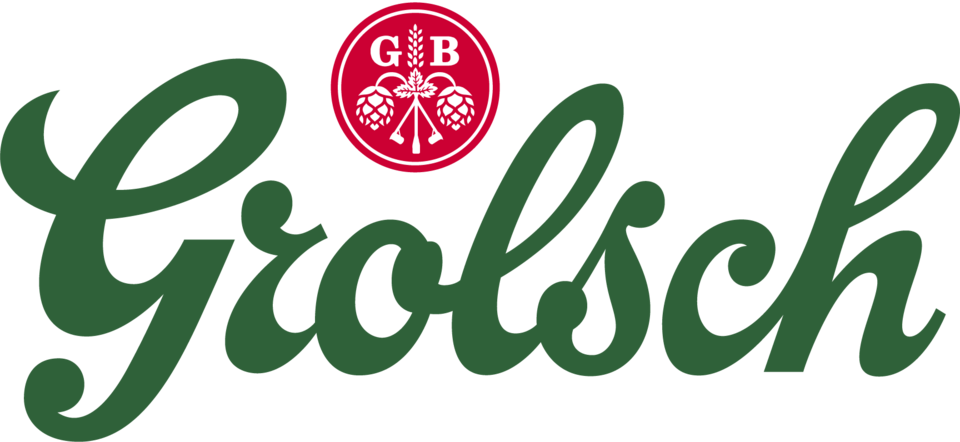
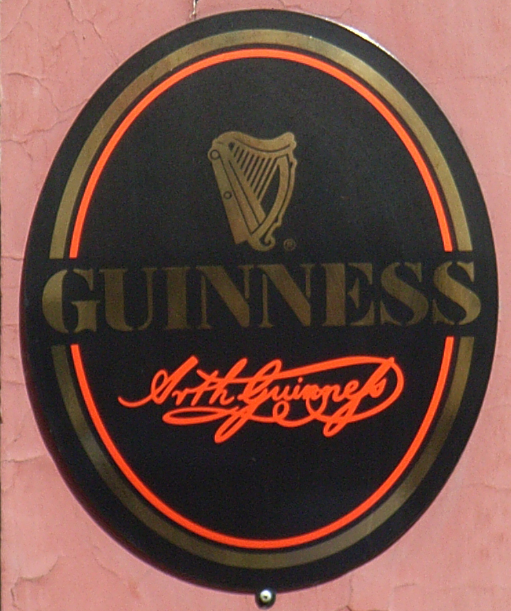
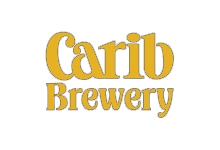
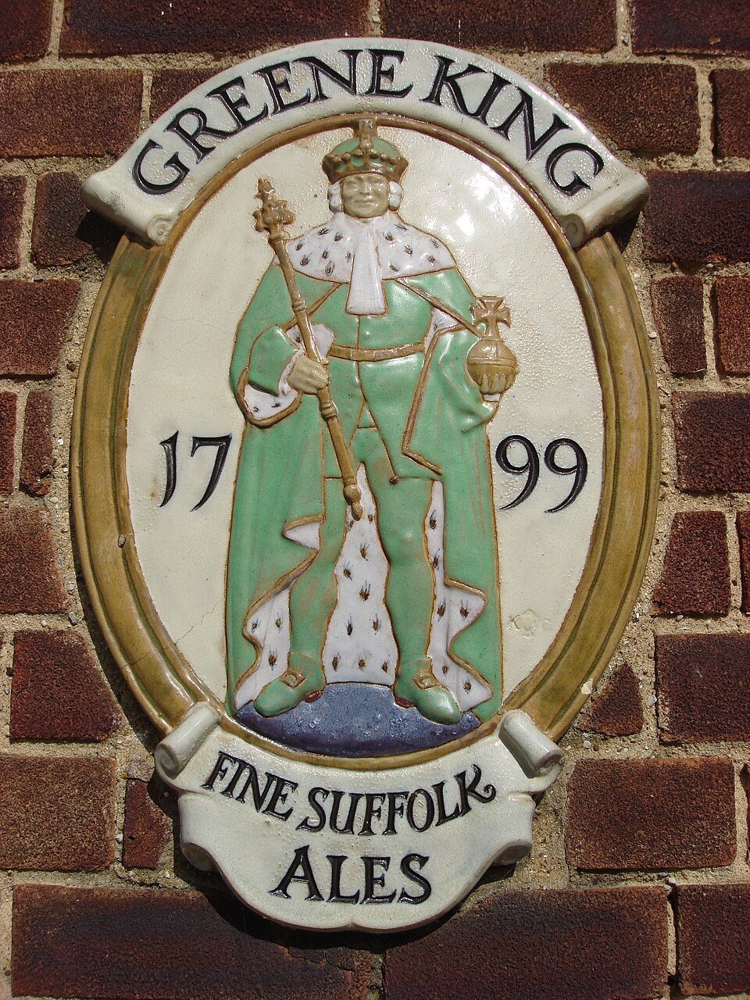
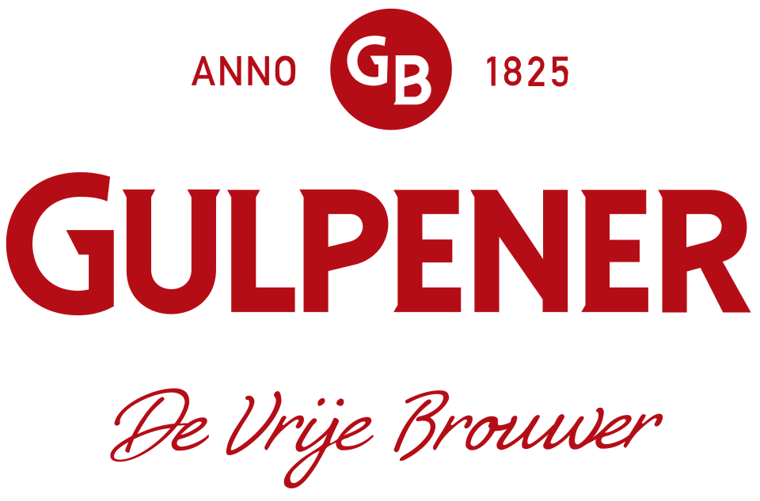
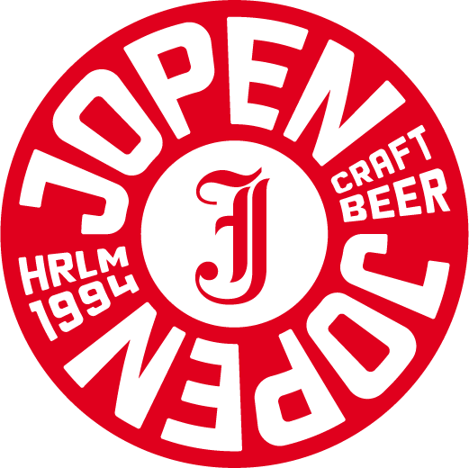
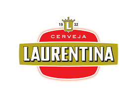
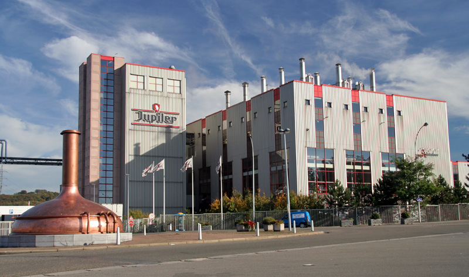
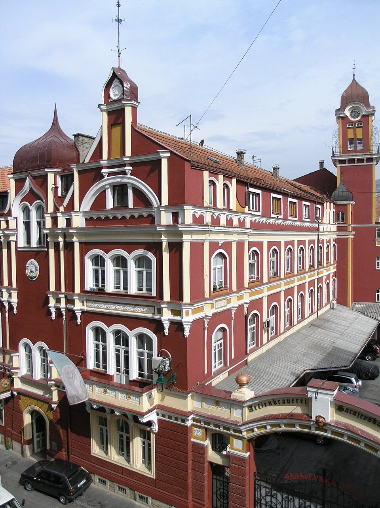

맥주 브랜드 147
세계 각국의 맥주 브랜드와 양조 기업을 모았습니다. 병과 캔, 잔, 탭 핸들처럼 손에 쥐는 물건마다 로고가 붙고 술집 간판에서 멀리서도 알아봐야 해서, 양조장의 문장(紋章)이나 창업 연도를 내세운 전통형 표장과 굵은 글자 로고가 함께 쓰이는 업종입니다. 브랜드 아틀라스에 수록된 맥주 브랜드 147개를 로고와 함께 정리했습니다. 편입 기준은 위키데이터의 분류와 업종 정보, 그리고 편집자가 브랜드 설명을 확인한 경우로 한정했습니다.
다른 컬렉션 보기
컬렉션 전체 →기원 국가가 확인된 브랜드는 123개이며 독일 26개, 미국 12개, 벨기에 9개, 네덜란드 7개, 일본 7개 순으로 많습니다. 산업 분류로는 식음료 143개, 브랜드·비즈니스 4개에 걸쳐 있습니다. 설립연도가 확인된 브랜드는 113개이며 가장 오래된 곳은 1803년, 가장 최근은 2011년에 시작했습니다. 시기별로는 1900년 이전 58개, 1900~1949년 21개, 1950~1999년 24개, 2000년 이후 10개입니다. 수록 자료로는 로고 이미지 110개, 로고 변천 자료 1개, 연혁 타임라인 8개를 갖췄습니다. 이 가운데 141개는 공식 웹사이트가 일치하는 위키데이터 개체로 연결해 두었습니다.
국가별 맥주 브랜드
기원 국가가 확인된 브랜드만 나눴습니다.
독일 맥주 브랜드 26
미국 맥주 브랜드 12
멕시코 맥주 브랜드 2
브라질 맥주 브랜드 2
스웨덴 맥주 브랜드 2
오스트리아 맥주 브랜드 2
이탈리아 맥주 브랜드 2
그리스 맥주 브랜드 1
뉴질랜드 맥주 브랜드 1
러시아 맥주 브랜드 1
베트남 맥주 브랜드 1
스위스 맥주 브랜드 1
싱가포르 맥주 브랜드 1
아르헨티나 맥주 브랜드 1
아일랜드 맥주 브랜드 1
인도 맥주 브랜드 1
중국 맥주 브랜드 1
칠레 맥주 브랜드 1
태국 맥주 브랜드 1
프랑스 맥주 브랜드 1
맥주 브랜드 목록
품질 점수 순 상위는 로고 타일로, 나머지는 가나다순 목록으로 보입니다.
 하이네켄Heineken네덜란드 · 1864년
하이네켄Heineken네덜란드 · 1864년하이네켄(Heineken)은 1864년 네덜란드 암스테르담에서 창립된 하이네켄 N.V.의 플래그십 페일 라거 맥주 브랜드이다.
버드와이저(Budweiser)는 아돌푸스 부시가 1876년 출시한 미국의 아메리칸 라거 맥주 브랜드이다.
코로나 엑스트라(Corona Extra)는 멕시코 그루포 모델로가 양조하는 페일 라거 맥주이다.
 스텔라 아르투아Stella Artois
스텔라 아르투아Stella Artois스텔라 아르투아는 벨기에 뢰번(Leuven)에 뿌리를 둔 필스너 라거로, 그 양조 전통은 뢰번의 덴 호른(Den Hoorn) 양조장으로 거슬러…
 기린Kirin일본
기린Kirin일본기린(麒麟, Kirin)은 일본의 대표 맥주·음료 기업으로, 창업기부터 동아시아 신화 속 상서로운 신수 '기린(麒麟)'을 브랜드 심볼로 삼아…
 아사히Asahi일본 · 1986년
아사히Asahi일본 · 1986년아사히(Asahi)는 일본의 대표적 맥주·음료 기업이다.
포가튼 보드워크 브루잉Forgotten Boardwalk Brewing포가튼 보드워크 브루잉은 2014년 미국 뉴저지 체리힐에서 제이미 켈리가 세운 수제맥주 양조장이다.
 브라흐마Brahma브라질 · 1888년
브라흐마Brahma브라질 · 1888년브라흐마(Brahma)는 브라질에서 1888년에 시작된 맥주 브랜드이다.
 몰슨 쿠어스Molson Coors Brewing Company미국 · 2005년
몰슨 쿠어스Molson Coors Brewing Company미국 · 2005년몰슨 쿠어스(Molson Coors Brewing Company)는 미국과 캐나다에 기반을 둔 다국적 음료·양조 회사로, 맥주 생산량 기준…
 페로니Peroni Brewery이탈리아 · 1846년
페로니Peroni Brewery이탈리아 · 1846년페로니(Peroni Brewery)는 1846년 Francesco Peroni가 이탈리아 Vigevano에서 세운 이탈리아의 맥주 양조…
 브루클린 브루어리Brooklyn Brewery미국 · 1988년
브루클린 브루어리Brooklyn Brewery미국 · 1988년브루클린 브루어리(Brooklyn Brewery)는 미국 뉴욕 브루클린에 기반을 둔 양조장이다.
 필스너 우르켈Pilsner Urquell체코 · 1842년
필스너 우르켈Pilsner Urquell체코 · 1842년필스너 우르켈(Pilsner Urquell)은 체코 플젠에서 양조하는 라거 맥주이다.
 아사히 맥주Asahi Breweries일본 · 1889년
아사히 맥주Asahi Breweries일본 · 1889년아사히 맥주(Asahi Breweries)는 도쿄 스미다에 본사를 둔 일본의 음료 지주회사 Asahi Group Holdings의 맥주 사업…
 크롬바커 바이젠Krombacher Brauerei독일 · 1803년
크롬바커 바이젠Krombacher Brauerei독일 · 1803년크롬바커 바이젠(Krombacher Brauerei)은 독일 Kreuztal에 본사를 둔 양조회사이다.

그롤쉬Grolsch네덜란드그롤쉬(Grolsch)는 1615년 Willem Neerfeldt가 Groenlo에서 설립한 네덜란드의 맥주 양조회사이다.
 스콜Skol영국 · 1959년
스콜Skol영국 · 1959년스콜(Skol)은 스코틀랜드에서 처음 양조된 국제적인 라거 맥주 브랜드이다.
 부데요비츠키 부드바르Budweiser Budvar체코 · 1895년
부데요비츠키 부드바르Budweiser Budvar체코 · 1895년부데요비츠키 부드바르(Budweiser Budvar)는 체코 체스케부데요비체에 있는 국영 양조장이다.
 대동강맥주Taedonggang
대동강맥주Taedonggang대동강맥주(Taedonggang)는 조선민주주의인민공화국의 대동강맥주공장에서 생산하는 맥주이다.
 몰슨Molson캐나다
몰슨Molson캐나다몰슨(Molson)은 1786년 John Molson이 창업한 캐나다의 맥주 기업으로, 본사는 몬트리올에 있다.
 사뮤엘 아담스Samuel Adams미국 · 1984년
사뮤엘 아담스Samuel Adams미국 · 1984년사뮤엘 아담스(Samuel Adams)는 미국 Boston Beer Company의 대표 맥주 브랜드이다.

기네스Guinness영국기네스(Guinness)는 18세기 아일랜드 더블린의 세인트 제임스 게이트 양조장에서 아서 기니스가 시작한 스타우트 맥주 브랜드이다.
 산토리Suntory일본 · 1899년
산토리Suntory일본 · 1899년산토리(Suntory)는 양주, 맥주, 청량 음료를 제조·판매하는 일본 굴지의 기업이다.
 밀러Miller Brewing Company미국 · 1855년
밀러Miller Brewing Company미국 · 1855년밀러(Miller Brewing Company)는 미국 위스콘신주 밀워키에 본사를 둔 맥주 양조회사이다.
 칼스버그Carlsberg Group덴마크 · 1847년
칼스버그Carlsberg Group덴마크 · 1847년칼스버그(Carlsberg Group)는 1847년 J.
 쿠어스 라이트Coors Light1978년
쿠어스 라이트Coors Light1978년쿠어스 라이트(Coors Light)는 Coors가 생산하고 현재 Molson Coors가 판매하는 알코올 도수 4.2%의 미국 라이트 라거…
 암스텔Amstel Brewery네덜란드 · 1870년
암스텔Amstel Brewery네덜란드 · 1870년암스텔(Amstel Brewery)은 1870년 암스테르담에서 설립된 네덜란드의 맥주 양조회사이자 맥주 브랜드이다.
발티카Baltika Breweries러시아 · 1990년발티카(Baltika Breweries)는 1990년 러시아 상트페테르부르크에서 생산을 시작한 맥주 제조 회사이다.
 주필러Jupiler벨기에 · 1966년
주필러Jupiler벨기에 · 1966년주필러(Jupiler)는 1966년 출시된 벨기에 맥주이다.
 벨코포포빅키 코젤Velkopopovický Kozel체코 · 1874년
벨코포포빅키 코젤Velkopopovický Kozel체코 · 1874년벨코포포빅키 코젤(Velkopopovický Kozel)은 1874년부터 생산된 체코 맥주이다.
 비트부르거Bitburger brewery독일 · 1817년
비트부르거Bitburger brewery독일 · 1817년비트부르거(Bitburger brewery)는 독일 라인란트팔츠주 Bitburg에 있는 대형 양조장이다.
 호프브로이하우스Staatliches Hofbräuhaus in München독일
호프브로이하우스Staatliches Hofbräuhaus in München독일호프브로이하우스(Staatliches Hofbräuhaus in München)는 1589년 빌헬름 5세 공작이 세운 독일 뮌헨의 맥주…
 괴서Gösser오스트리아 · 1860년
괴서Gösser오스트리아 · 1860년괴서(Gösser)는 오스트리아 레오벤의 괴서 양조장이 만드는 대표 맥주 브랜드이다.
 앤하이저부시 인베브Anheuser-Busch InBev벨기에 · 1977년
앤하이저부시 인베브Anheuser-Busch InBev벨기에 · 1977년앤하이저부시 인베브(Anheuser-Busch InBev)는 벨기에 브뤼셀에 본사를 둔 맥주 제조 회사이다.
 칭다오 맥주Tsingtao Brewery1903년
칭다오 맥주Tsingtao Brewery1903년칭다오 맥주(Tsingtao Brewery)는 중화인민공화국 칭다오시에 본사를 둔 맥주 양조 회사이다.
 OB 맥주Oriental Brewery한국 · 1952년
OB 맥주Oriental Brewery한국 · 1952년OB 맥주(Oriental Brewery)는 대한민국 서울특별시 강남구에 본사를 둔 주류 기업이다.
 인베브InBev Belgium벨기에 · 2004년
인베브InBev Belgium벨기에 · 2004년인베브(InBev Belgium)는 벨기에의 맥주 회사로, 2004년 인터브루(Interbrew)와 암베브(AmBev)의 합병으로 탄생한 양조…
 쿠어스Coors Brewing Company미국 · 1873년
쿠어스Coors Brewing Company미국 · 1873년쿠어스(Coors Brewing Company)는 미국 콜로라도주 골든에 본사를 둔 양조회사이자 맥주 회사이다.
 삿포로 맥주Sapporo Breweries일본 · 1876년
삿포로 맥주Sapporo Breweries일본 · 1876년삿포로 맥주(Sapporo Breweries)는 일본 굴지의 맥주 회사이다.
 뢰벤브로이Löwenbräu Brewery독일
뢰벤브로이Löwenbräu Brewery독일뢰벤브로이(Löwenbräu Brewery)는 독일 뮌헨에 있는 맥주 양조장이다.
 바이엔슈테판 양조장Bavarian State Brewery Weihenstephan독일
바이엔슈테판 양조장Bavarian State Brewery Weihenstephan독일바이엔슈테판 양조장(Bavarian State Brewery Weihenstephan)은 독일 바이에른 자유주가 소유한 국영 양조장으로,…
 오리온 맥주Orion Breweries일본 · 1957년
오리온 맥주Orion Breweries일본 · 1957년오리온 맥주(Orion Breweries)는 오키나와현 우라소에시에 본사를 둔 일본의 맥주 제조회사이다.
 하이트진로HiteJinro한국 · 1924년
하이트진로HiteJinro한국 · 1924년하이트진로(HiteJinro)는 참이슬 소주와 하이트·테라 맥주로 유명한 한국의 대표 주류 기업으로, 그 기원은 1924년으로 거슬러 올라간다.
 하이트맥주 주식회사Hite한국 · 1924년
하이트맥주 주식회사Hite한국 · 1924년하이트맥주(Hite)는 대한민국 서울특별시에 본사를 두었던 맥주 회사였다.
 Group Mahou San Miguel스페인 · 1890년
Group Mahou San Miguel스페인 · 1890년Group Mahou San Miguel은 스페인 마드리드에 본사를 둔 맥주 양조 기업이다.
 Hacker-Pschorr Brewery독일
Hacker-Pschorr Brewery독일Hacker-Pschorr Brewery는 독일 뮌헨에 본사를 둔 양조장이다.

Carib Brewery1947년Carib Brewery는 트리니다드 토바고 산후안에 본사를 둔 양조 회사이다.
Granville Island Brewing캐나다 · 1984년Granville Island Brewing은 캐나다 브리티시컬럼비아주 밴쿠버의 Granville Island에서 출발한 양조장이다.
Foster's1888년Foster's는 1888년 오스트레일리아에서 양조를 시작한 라거 브랜드이다.
전체 목록

Greene KingGreene King은 1799년에 설립된 영국의 펍·양조 기업이다.
Gulpener BreweryGulpener Brewery는 네덜란드 Gulpen에 본사를 둔 독립 양조장이다.
JopenJopen은 네덜란드 하를럼의 맥주 양조장 브랜드이다.
LaurentinaLaurentina는 1932년에 설립된 모잠비크 최초의 맥주 브랜드이자 과거 양조장이다.
Piedboeuf BreweryPiedboeuf Brewery는 벨기에 Jupille-sur-Meuse에 있는 양조장이다.
Sarajevska PivaraSarajevska Pivara는 보스니아 헤르체고비나의 사라예보에 본사를 둔 양조 회사이다.